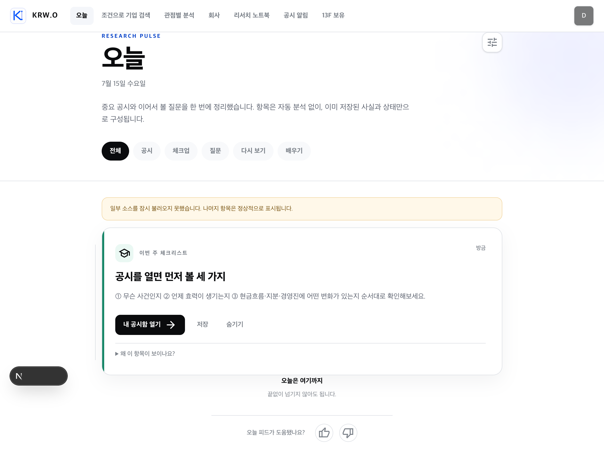
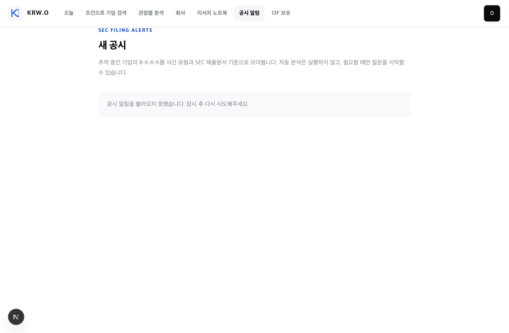

브라우저 이벤트의 사용자 ID가 끊김
로그인 상태의 client analytics도 API에서 userId: null로 저장됩니다. Worker는 user ID를 쓰므로 구독→탐지→push→원문→두 번째 공시 코호트가 분절됩니다. 기능보다 먼저 고쳐야 실험 결과를 믿을 수 있습니다.
기존 제품, 진행 중인 8-K·6-K 알림과 Research Pulse, 신규 후보, 경쟁사 패턴, 상업용 무료·오픈소스 조건을 한 번에 검토한 결과입니다. 제품 코드는 수정하지 않았습니다.
관심기업 → 실제 공시 → 신뢰 가능한 알림 → 원문/Exhibit → 읽음·저장·메모 → 다음 공시입니다.현재 코드에는 이 루프의 상당 부분이 이미 있습니다. 따라서 신규 콘텐츠를 더 만드는 것보다 배포·식별자·알림 신뢰성·저장된 가치의 연결을 먼저 완성해야 합니다. 랜덤 AI Q&A, 자동 AI 만화, 무한 피드, streak, 초기 공개 커뮤니티는 보류가 맞습니다.
| 기능 | 리텐션 역할 | 현재 판정 | 모델/외부비용 | 권고 |
|---|---|---|---|---|
| 회사·Discover·Guru | 첫 기업 발견과 분석 시작 | 획득/활성화에 강함, 자체 재방문 트리거는 약함 | 조회 0, 분석 실행 시 LLM | 결과마다 팔로우·공시알림·저장으로 닫기 |
| 채팅 리서치 | 사건 발생 후 깊이 파기 | 강한 가치 기능이나 비용형·간헐형 | LLM 비용 발생 | 트리거가 아니라 사용자 선택형 depth로 유지 |
| 리서치 노트북·메모·thesis | 사용자 축적 가치와 장기 락인 | 핵심 잠재력, 일부 저장 UI·링크 미연결 | 수동 0, AI 재정리만 LLM | 새 콘텐츠보다 저장→다시보기 연결 우선 |
| 공시 알림 | 실제 외부 사건 기반 재방문 | 가장 강함 구독·분류·inbox·push·digest·RSS/ICS·diff 구현 | LLM 0, SEC 무료 | 신뢰성/ID/quiet hours 후 단계 출시 |
| Research Pulse | 공시·질문·메모·학습의 개인 홈 | 진행 중 finite feed와 결정론적 랭킹 구현, prod 기본 off | 합성 LLM 0 | 공시 중심 “since last visit” 인박스로 좁히기 |
| 13F | 분기별 재방문 | 조회 경험은 있으나 자동 갱신 루프 미확인 | 표시 0 | 분기 변경 리캡만; 일상 피드 슬롯 채우기 금지 |
| 공유 링크·공개 질문 | 추천/획득 | 리텐션보다는 acquisition | 열람 0 | 공시 fact card 공유로 확장 가능 |
| 온보딩 투어 | 기존 분석 기능 안내 | 회사·채팅·Guru 중심, 공시/Pulse 루프 없음 | 0 | 기업 추적→최근 3건→원문→푸시 테스트로 교체/추가 |
| 1st-party analytics | 학습과 실험 | 이벤트는 많지만 사용자 코호트와 retention dashboard 미완성 | 외부 SaaS 0 | Postgres 집계·TTL·identity 연결 |
페이지 요청 시 기존 DB 상태에서 공시·체크업·열린 질문·오래된 메모/노트북·정적 학습을 합성하고 규칙 점수로 정렬합니다. 새 항목 수는 화면이 보일 때 60초마다 확인합니다. 질문의 답은 생성하지 않으며 클릭하면 질문이 미리 입력된 채팅으로 이동할 뿐입니다.
/pulse는 404였습니다. /filings는 로그인 경로까지는 배포돼 있으나 실제 사용자 데이터 플로우는 인증 없이 확인할 수 없습니다.로그인 상태의 client analytics도 API에서 userId: null로 저장됩니다. Worker는 user ID를 쓰므로 구독→탐지→push→원문→두 번째 공시 코호트가 분절됩니다. 기능보다 먼저 고쳐야 실험 결과를 믿을 수 있습니다.
감사 중 layout chunk 오류가 나자 AppShell의 초기 opacity:0가 풀리지 않아 전체 화면이 빈 화면으로 남았습니다. 서버 렌더 콘텐츠는 hydration/animation 실패 시에도 보여야 합니다.
/filings에서 “공시 알림을 불러오지 못했습니다”를 관찰했습니다. moving worktree/미적용 migration 가능성이 있으므로 retention 실험 전에 migration·API·worker·flag·heartbeat 인수 테스트가 필요합니다.
DB/API에는 시작·종료 필드가 있으나 설정 UI와 push 정책에서 사용되지 않습니다. 금융 알림의 피로와 해지를 막는 핵심 guardrail입니다.
pulse_viewed는 client에서 보내지만 analytics API가 로그인 사용자도 user_id:null로 저장하고, D7 SQL은 user_id is not null만 집계합니다. 조회·노출·원문 열기를 한 사용자로 연결하기 전에는 Pulse 실험을 판정할 수 없습니다.
push_provider_accepted는 기기 delivery 단위지만 receipt click은 사용자+notification 단위로 중복 제거됩니다. 다중 기기 사용자는 CTR이 인위적으로 낮아지고 test push도 분모를 오염시킬 수 있습니다. 사용자 알림 퍼널과 기기 전달 퍼널을 분리해야 합니다.
filing_detected가 공시 단위 최초 발견이 아니라 사용자별 알림 생성 루프에서 기록됩니다. 구독자가 많으면 중복되고 baseline·미알림 공시는 빠집니다. 탐지 지연은 accepted_at → first_seen_at을 accession별 한 번 계산해야 합니다.
현재 dashboard는 기존 채팅 funnel 중심이며 30일 raw rows를 페이지네이션 없이 가져옵니다. API max rows가 1,000이면 이후 행이 조용히 잘리고, 10% sampled pageview를 보정 없이 분모로 쓰면 비율도 왜곡됩니다. SQL view/일간 rollup이 필요합니다.
답변 저장 컴포넌트가 화면에서 사용되지 않고, Pulse 메모가 존재하지 않는 ?tab=notes로 가며, 빈 watchlist의 #watchlist-ticker도 target이 없습니다. 새 카드보다 이 루프를 먼저 완성해야 합니다.
고정 사용자 bucket, experiment_exposed, 공시/Pulse SQL cohort가 없습니다. 특히 “1개 기업 vs 3개 기업 후 권한”을 실험한다면서 화면은 3개를 하드코딩해 한 변형을 사실상 기본값으로 만들었습니다.
일일 checkup의 available_at이 합성 때마다 현재 시각으로 바뀌어, 상태 변화가 없어도 60초 poll에서 새 항목으로 셀 수 있습니다. 학습 카드도 매번 “방금”으로 보입니다.
서버 route와 client nav가 서로 다른 private/public env 값을 보며 build args 전달도 별도입니다. route만 켜지고 nav는 숨는 부분 출시 위험이 있습니다.
공시 문서는 next-event retention을 north star로 잡았지만 Pulse 문서는 첫 Pulse 후 7일 재방문을 1차로 둡니다. D7 최적화는 공시 없는 날 filler를 만들 유인이 있습니다. next-event를 1차, D7을 진단 지표로 두는 편이 맞습니다.
“새로 생긴 것”과 “계속 안 읽은 것”을 구분하지 않으면 같은 공시가 매일 리캡에 남아 피로를 만들 수 있습니다. 반복 알림은 명시적 옵션으로 제한해야 합니다.
👍/👎 이벤트는 좋지만, DB의 feedback 필드는 연결되지 않았고 이유도 없습니다. 부정 후 ‘관련 없음/반복/너무 일반적/오류’ 네 개 chip만 받으면 텍스트 수집 없이 개선할 수 있습니다.
nav에 공시/Pulse 새 항목 수가 없고, 장애 배너는 어느 소스와 어느 행동이 영향을 받는지 말하지 않습니다. 과한 badge가 아니라 ‘미열람 중요 공시’와 ‘SEC 원문 정상/지연’만 보여야 합니다.


| 패턴 | 판정 | 적용한다면 | 이유 |
|---|---|---|---|
| 인스타식 팔로우 그래프 | 채택 | 팔로우한 기업·보유 종목·저장한 질문이 feed 입력 | 관련성을 만든다 |
| 인스타식 무한스크롤 | 거절 | 20개 단위 수동 “이전 항목 더 보기”와 명확한 끝 | 투자 제품의 완료감·신뢰를 지킨다 |
| 새 항목 badge | 제한 채택 | 중요 미열람 공시만; vanity count 금지 | 실제 사건을 알린다 |
| 무작위 AI 질문·답변 | 거절 | 사용자 열린 질문, 공시 Item 기반 고정 질문, 오래된 메모만 | 비용·환각·무관성 방지 |
| 정적 4컷 | 주 1회/온보딩 | 구조화 사실→고정 템플릿, SEC 링크·accession·생성시각 표시 | 공유·교육에는 유용, 핵심 리텐션은 아님 |
| 실시간 생성 4컷 | 보류 | 수요 검증 후에도 runtime LLM 대신 편집 템플릿 | 검수·모델·저작권 비용 |
| streak | 거절 | 대신 “알림 정상/미열람 0/다음 예정” 상태 | 공시는 매일 발생하지 않는다 |
| 댓글·종목 채팅 | 초기 거절 | 개인 메모→원문 특정 위치 공유→제한 질문판 순서 | 스팸·pump·신고·moderation 비용 |
| 광고/스폰서 콘텐츠 | 공시 feed와 혼합 금지 | 필요 시 완전히 분리된 영역과 명확한 라벨 | 공식 공시 신뢰 훼손 |
| 제품 | 재방문 장치 | KRW.O가 가져올 것 | 가져오지 않을 것 |
|---|---|---|---|
| Quartr | watchlist, calendar sync, live/keyword alerts, daily·weekly recap | 팔로우 전역 연결, 빈 recap 미발송 | 콜·transcript·AI 범위 확장 |
| TIKR | active watchlist가 events/news/filings feed 생성 | 관심목록을 홈의 입력으로 | 뉴스·재무 terminal 확장 |
| Koyfin | 채널 선택, alert center, watchlist 일괄 설정, pause/delete | 유형 toggle·이력·일시정지·원문 링크 | 가격·기술지표 alert |
| Fiscal.ai | 투자 dashboard를 로그인 시작 화면으로 | 검색창보다 “내 기업 변경사항”으로 시작 | broker·estimate·Copilot |
| Seeking Alpha | portfolio alert·daily digest·author/community loop | digest와 개인 메모 | 초기 공개 댓글/그룹 |
| BamSEC | 기업×문서 matrix, amendment filter, 1~2분 반영 주장 | 정확한 수신시각·누락 진단·유형 matrix | 전사 문서검색·Excel |
| Stocktwits | following/watchlist/trending/suggested symbol streams | 피드 탭 구조만 | UGC·sentiment·engagement 조작 위험 |
| TradingView | watchlist·saved news flow·alerts·community | 저장 필터·watchlist별 규칙 | 기술지표 engine·social network |
경쟁사의 실제 retention rate는 공개되지 않았습니다. 위 표는 공식 기능·가격 문서에서 관찰한 재방문 장치이며, 효과 크기는 추론입니다.
analytics_eventsnext/og ImageResponsePostHog, Plausible CE, GrowthBook full, Novu, Formbricks, Fider, listmonk, Unleash, Meilisearch, 별도 이메일 인프라는 현재 규모에서 운영·RAM·copyleft·동기화 비용이 더 큽니다.
| 항목 | 문제 | 권고 |
|---|---|---|
redis:7-alpine | 부동 tag가 Redis 7.4~7.8 RSAL/SSPL로 이동 가능 | 불필요하면 제거, 필요하면 Valkey BSD-3 호환 테스트 |
| Claude Agent SDK | Commercial Terms 적용, OSS 아님 | 공시/Pulse와 격리; LLM 제거 범위라면 SDK·gateway·worker 제거 후보 |
| Brandfetch | 월 50만 logo render 무료이나 proprietary SaaS와 revocable terms | ticker/이니셜 fallback, 4컷에는 기업 logo 제외 |
| Supabase Free | 500MB DB·5GB egress·7일 저활동 pause·SLA/자동백업 없음 | raw TTL, daily rollup, 별도 backup |
| Vercel Hobby | 비상업 개인용만 | 상업 서비스의 무료 배포 대안으로 간주 금지 |
| 폰트·binary | Material Symbols, Sharp/libvips 등 notice 의무 | THIRD_PARTY_NOTICES와 license CI |
Open Peeps CC0, Rough.js MIT, Lucide ISC, Noto CJK OFL을 사용할 수 있습니다. 단, 현재처럼 텍스트 4패널로 먼저 검증하는 편이 가장 저렴합니다.
유효 공시는 구독 이후 실제로 사용자에게 생성된 별도 filing event이며, baseline·과거 이력·test push·동일 공시 중복 전달은 제외합니다. 다음 사건이 발생하고 클릭 관찰 7일까지 지난 사용자만 성숙 분모에 넣어 우측 검열을 막습니다.
| 영역 | 지표 |
|---|---|
| Activation | 기업 구독→최근 공시 open→원문 open→push test received |
| Reliability | 탐지 p50/p95, duplicate, worker heartbeat, provider accepted→SW received→show called |
| Value | notification click→SEC source, key Exhibit open, next-event retention |
| Pulse | impression→useful action, source open per impression, negative reason, source degraded |
| Guardrail | push unsubscribe, company unfollow, digest 전환, quiet-hours 설정, 부정 feedback |
| Cost | raw analytics row growth, DB/egress, Pulse 원인의 LLM job=0 |
filing_delivery_funnel_daily: 사용자 알림 전환과 기기 delivery 상태를 분리.filing_next_event_cohort_weekly: 성숙 코호트의 다음 사건 상세·근거 열기를 분리.pulse_user_daily: 실제 view·50%/1초 impression·useful action·feedback을 사용자/소스별 집계.experiment_assignments + experiment_exposures: stable hash 배정과 실제 노출을 구분.analytics_data_quality_daily: 필수 속성 누락, 중복, 익명/로그인 연결 실패, 집계 freshness.처음에는 Postgres view로 시작하고, raw notification/delivery가 TTL로 삭제되기 전에 기존 worker가 일·주간 요약만 남기면 외부 분석 SaaS가 필요 없습니다.
동시에 하나만 실행하고 user ID 기반 stable hash를 사용합니다. experiment_exposed는 사용자·실험당 한 번 기록하며, 최소 기간/표본/guardrail을 시작 전에 고정합니다.
CIK-first 8-K/6-K, inbox, source deep link, priority/digest, finite Pulse, explainability, saved state, RSS/ICS, static learning.
prod readiness, user-linked metrics, quiet hours, broken saved-value links, page visibility resilience, timestamp/new count, stable experiments.
weekly recap, since-last home, expected filing window, shareable fact card, static 4컷, 13F quarterly recap.
random AI Q&A, automatic AI summaries, infinite scroll, streaks, early comments/chat, global news feed, sponsored content mixed with filings.
관찰과 추론을 구분했습니다. 로컬 실행 화면·코드는 관찰, 경쟁 기능에서 KRW.O로의 효과 예상은 추론입니다. 작업 트리는 감사 중에도 변경돼 이 문서는 시점 스냅샷입니다.